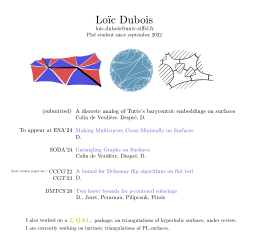

Loïc Dubois

Who I am
Phd student at LIGM Université Gustave Eiffel (Champs sur Marne, France) since september 2022.
Under the supervision of Éric Colin de Verdière and Vincent Despré,
I receive regular help and advice from Monique Teillaud.
Among other things I like computational geometry/topology and graphs.
Contact me at
loic.dubois@u-pem.fr
Publications
- Untangling Graphs on Surfaces, SODA'23, Colin de Verdière, Despré, Dubois
- A bound for Delaunay flip algorithms on flat tori, CCCG'22 (best student paper award) and CGT'23, Dubois
- Two lower bounds for p-centered colorings, DMTCS'20, Dubois, Joret, Perarnau, Pilipczuk, Pitois
Preprints